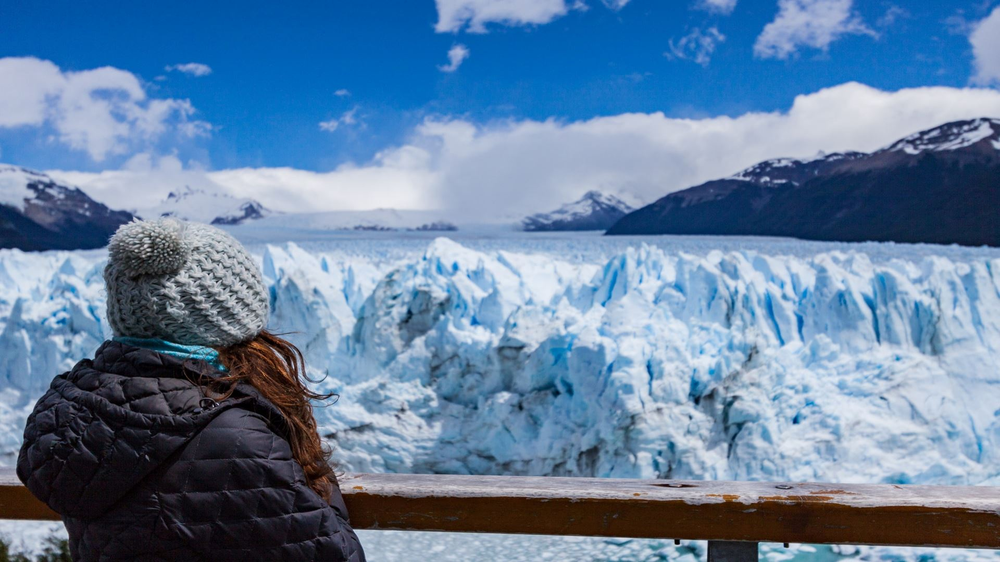
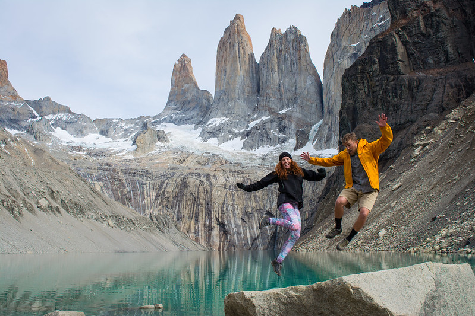
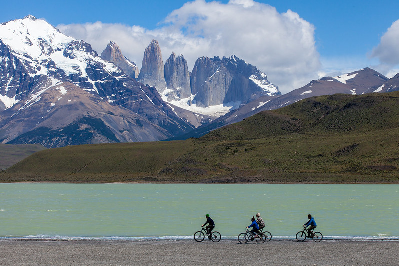
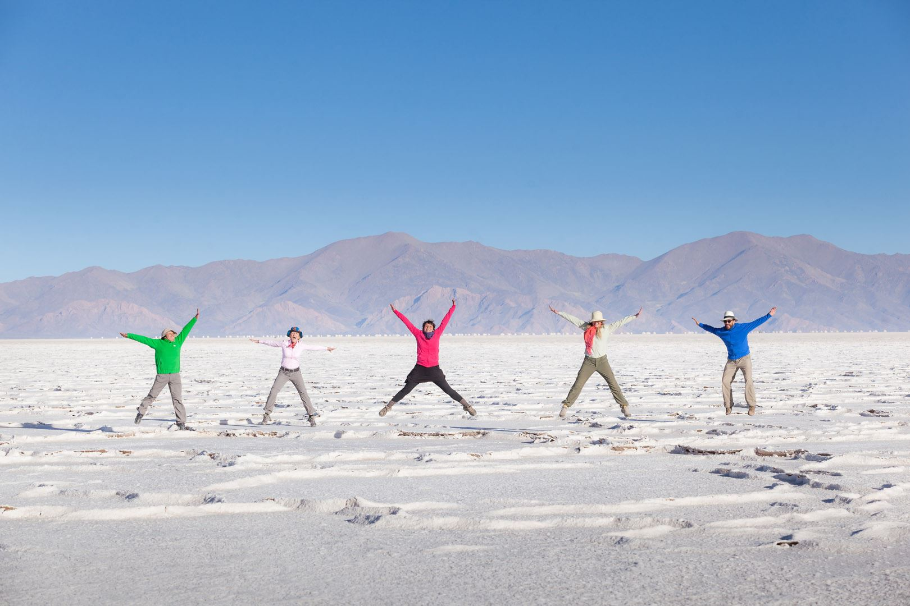

Visite El Chaltén, nombrada la Capital Nacional del Trekking, gracias a sus numerosos senderos que
recorren
el Parque Nacional Los Glaciares. En este viaje podrás observar importantes cerros de la Cordillera de los
Andes y las lagunas formadas por los deshielos.
Este completo viaje incluye tres noches de alojamiento con desayuno incluido, excursiones y traslados
ida y
vuelta desde el aeropuerto de El Calafate.
Podrá elegir entre tres categorías de alojamiento: Clásico (3 estrellas), Superior (4 estrellas) y De
Lujo
(5 estrellas).
Durante las excursiones, realizarás un trekking hacia el Glaciar Cagliero, en donde podrás caminar sobre
el
hielo. También incluimos una actividad de rafting sobre el Río de las Vueltas.

Paquete El Calafate Clásico
Con nuestro paquete de viaje El Calafate Clásico aprovechará al máximo sus vacaciones en uno de los
lugares
más reconocidos de la Patagonia Argentina.
Este completo viaje incluye tres noches de alojamiento con desayuno incluido, excursiones y traslados
ida y
vuelta desde el aeropuerto de El Calafate.
Podrá elegir entre tres categorías de alojamiento: Clásico (3 estrellas), Superior (4 estrellas) y De
Lujo
(5 estrellas).
Durante las excursiones visitaras el Parque Nacional Los Glaciares y recorreras las pasarelas que se
encuentran frente al Glaciar Perito Moreno para obtener las mejores vistas. Además, navegaras por una hora
frente al glaciar en un cómodo catamarán.
Otros Paquetes Recomendados

Circuito W Trek Torres del Paine
Disfruta de la Patagonia extrema con una experiencia única de cinco días que te llevará a recorrer el
corazón del Parque Nacional Torres del Paine. Incluye la navegación en Catamarán sobre el Lago Pehoé.

Torres del Paine en Bicicleta
Este programa de tres días te permitirá recorrer en bicicleta los lugares más destacados del Parque Nacional: las
famosas torres de granito en Base Las Torres, el Valle Francés y el Glaciar Grey.

Paquete Jujuy Aventura
Recorre durante cuatro días la maravillosa Provincia de Jujuy. Conoceras las Salinas Grandes, las quebradas y valles llevan al Tren de las Nubes y Humahuaca con su Cerro de los Siete Colores.